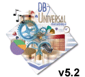
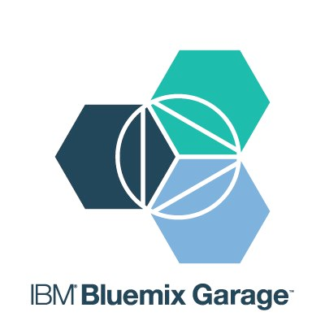

Resume
About
Interests
Skills
Work

Scott Lewis
lewis@ca.ibm.com
Mobile 416.414.3186
DB2 V5
In the mid 90s, DB2's tools were not considered delightful by database administrators. The primary problem centred around a one tool per operation approach (e.g., database backup). Worse, DB2's new strategy was to compete with and beat Microsoft's Access product, which was perceived as easy to use.
Human factors staff, at that time, were relegated to running user testing sessions of installation programs. It was unusual for product executives to see a working concept from someone in my role, a usability specialist. I had created a 'vision demo' illustrating how a single database administration tool could replace dozens of tools. The key was to adopt a user-object approach rather than the current action-oriented design. The product team got behind my idea.
A large part of the next release was dedicated to delighting database administrators. A larger design team, formed across IBM locations, focused on implementing this innovation. I was named Design Lead.
As a result, customers, users and the trade press loved our DBA Tools. This increased IBM's bottom line. The design team won SWG's "Star Award" that year.

WATSON ONCOLOGY
and CLINICAL TRIAL MATCHING
When I joined the Watson Oncology team, it consisted of three partners: IBM, Memorial Sloan Kettering and Wellpoint. Our mandate was to apply cognitive computing to inform cancer treatment decisions. Wellpoint was tasked with designing and developing a tool that oncologists could use as an expert second opinion. IBM's role was to provide the cognitive technology. My role was to critique Wellpoint's design.
It was soon apparent that IBM should design and build the solution. I was named Design Lead. I led a very small team to deliver the first release of IBM Watson for Oncology, which, in beta, garnered praise for it's ease of learning and ease of use. (High praise from oncologists who aren't easy to please.)
A second Oncology product was launched to match patients to clinical trials. I led the initial user research at the Mayo Clinic, which formed the groundwork for the project. By this time, IBM Design Thinking had launched and the team attended design camp. Mayo became our beta partner and, in production, put the system through the ringer.
One morning, I received word that IBM's CEO Ginni Rometty had been to Mayo and spent significant time with our sponsor user. I learned that she had asked tough questions about the system's value and seemed intensely focussed on its ease of use. Mayo staff were effusive in their praise of the product's design and their delight in working with IBM on the project. IBM Watson for Clinical Trial Matching promises great success in the healthcare space.
What else have I done? Check out my resume.
Here are some recent designs from IBM Watson for Oncology

IBM BLUEMIX
GARAGE
In 2015, I made a big switch from product design to working closely with IBM customers in services. At the Bluemix garage we employ the "Garage Method", which is a lean-oriented version of IBM Design Thinking designed to very quickly get results for our customers. How quickly? Workshop and initial sketches within a week, high fidelity design within 2 weeks and implementations in as little as 4 weeks. This together with working with our developers who practice a version of agile called "extreme programming" has prepared me to take better approaches to any future project I might be a part of.
I've run dozens of workshops with different IBM clients and startups. We got further business with many of these clients. Unfortunately, because of client confidentiality, I cannot share any of my design work from these engagements.
